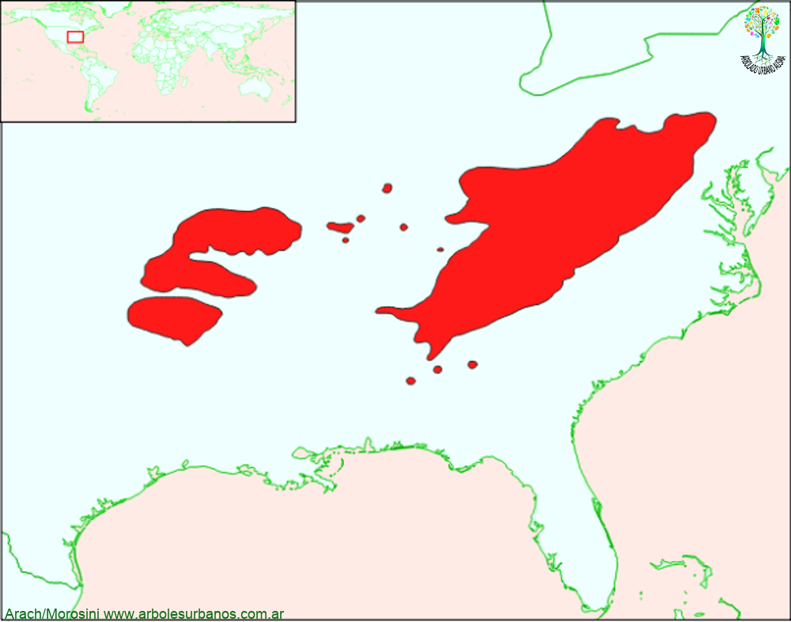

Click en las imágenes para ampliar

{kind=link}
{kind=link}
{kind=link}
{kind=link}
- NOMBRE CIENTÍFICO
- Robinia pseudoacacia
- FAMILIA BOTÁNICA
- Fabáceas
- ORIGEN
- Esta especie es nativa de los Estados Unidos originalmente con dos áreas de distribución natural, una en el noreste de los Estados unidos y otra en el centro; aunque se ha naturalizado por fuera de estos dos sectores.
- DESCRIPCIÓN GENERAL
- Es un árbol de crecimiento rápido, de tamaño mediano llegando a alcanzar 22 metros de altura, con un eje central de hasta 3 o 4 metros como máximo, para luego dividirse en numerosas ramas. Su copa es de forma anchamente extendida. La corteza es gruesa, textura irregular y color marrón-grisáceo en la madurez Sus hojas son compuestas pinnadas de 25 cm. de largo tienen entre 11 a 21 folíolos oblongos de hasta 5 cm. de largo y 2.5 de ancho, en el nacimiento de cada hoja hay dos espinas. La cara superior es de color verde azulado y a inferior es verde grisáceo; en otoño toman distintos tonalidades de amarillo antes de caer.
- FLORES
- Las flores son perfectas, ligeramente perfumadas, de color blanco y forma papilonada, agrupadas en racimos colgantes. Aparecen entre mediado y fin de la primavera. Existen varios cultívares de esta especie, algunas de ellas con flores de color rosado, como las denominadas “Casque Rouge”.
- FRUTOS
- Los frutos son legumbres colgantes de color marrón, de hasta 10 cm. de largo, de consistencia coriácea, contienen entre 4 y hasta 10 semillas con forma arriñonada.
- USOS
- Aunque tiene una madera dura y resistente, no es una especie eminentemente forestal, en su lugar de origen es utilizada para construcciones rurales, postes y estructuras. Se la utiliza en otros países como árbol multipropósito: para crear montes de abrigo a los animales, fijación de terraplenes, para la producción de miel.
- REPRODUCCIÓN
- La reproducción se realiza por semillas, antes de ser sembradas deben ser inmersas en una solución de ácido sulfúrico concentrada por una hora, o sino sumergirlas en agua hirviendo durante un minuto, con esto se ablanda la cutícula que protege a las semillas. También se puede reproducir fácilmente por estacas basales enraizadas.
- PARTICULARIDADES
- La robinia es una especie que se asilvestra fácilmente, ya que cuando se la corta produce gran cantidad de retoños basales creando pequeños montes y además su semilla se dispersa con facilidad. Una ventaja que tiene esta especie es que fija el nitrógeno del suelo haciéndolo más accesible a las demás especies y mejorando la fertilidad.